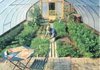
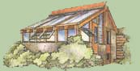
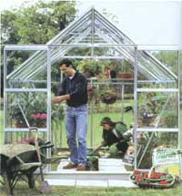
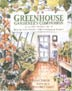

Choosing A Greenhouse
How to garden year-round with a greenhouse, including glazing, polyethylene films, acrylic, fiberglass, glass, polycarbonate, laying a solid foundation.
By Shane Smith
February/March 2003
Grow food for the table - and the spirit - any time of year
What gardener doesn't dream of having a greenhouse? Dozens of greenhouse kits can be found on the market (see the chart below ), or you can build your own from scratch (see " Building a Hoophouse " ). Either way, you'll have a warm, fragrant place to play and plenty of fresh food and flowers right through the winter.
Prices on greenhouse kits vary widely, depending upon the type of glazing provided. Kits with polyethylene film can cost less than $200, while a kit using much more durable and better-insulating polycarbonate can cost $4,000. Here's what you need to know before you buy or build, including a detailed discussion of various glazing options.
GLAZING
The most expensive component in many greenhouses is the glazing material. The better the glazing, the more expensive the greenhouse. Glazing permits the entry of light and solar heat into the structure. An array of choices exists for glazing, including glass, vinyl, fiberglass, polycarbonate, acrylic and polyethylene. The materials vary in cost, ease of application, solar performance and longevity.
Whatever glazing material you buy should be made specifically to withstand the sun over many years without losing clarity. Virtually all plastics eventually break down (they either turn yellow or white and/or become brittle) when exposed to the sun's ultraviolet light, limiting the amount and quality of light that enters the greenhouse. Even so, some plastics are a sensible choice; many are guaranteed for 20 years. Some plastics are many times stronger than glass. Where I live in Wyoming, hail occurs an average of 10 times a year, so glass is not a good choice. For our specific climate and budget, I choose polycarbonate. There are many pros and cons to consider in selecting the right glazing. Often the No. 1 deteminant is budget. Whatever you choose, be sure to read a copy of the warranty or guarantee before you buy.
POLYETHYLENE FILMS
Films are the type of flexible plastic used in plastic bags or food wrap, only much thicker. Brands vary in thickness, quality and lifespan. In general, you get what you pay for. The biggest drawback to polyethylene (or "poly") is that the lifespan usually is between one and six years (depending upon the manufacturer and a little luck). Single-layer films are most common, but commercial growers often set up a system with two layers of polyethylene and inflate an airspace in between (with a small squirrel-cage fan), which provides some insulation. Other, tougher polyethylene options are woven poly and high-density polyethylene, a honeycombed material with better energy efficiency. Some poly films hold in long-wave (infrared) radiation better than others, holding more heat - important in colder climates.
For windy areas, the tougher woven polyethylene is necessary. I've also heard good reports on woven poly from people who need a cheap glazing material with a three- to four-year lifespan.
ACRYLIC
Acrylic is not as common as it once was, but it's still available as a single- or double-walled material. Very strong and easy to cut, it expands and contracts with temperature swings. Though acrylic can be clearer than polycarbonate, it is not as clear as glass. And, like most plastics, acrylic easily can be scratched. It is relatively inexpensive as a single sheet. As you get into the multiple-layer, honeycomb types of sheets, prices rise rapidly. Although acrylic is relatively easy to bend around large-diameter curves, it readily cracks when hit with a blunt object - such as a large hailstone. The lifespan of most acrylics is from 10 to 30 years: Check the warranty before you buy.
FIBERGLASS
Fiberglass is commonly found in many brands and grades. Its lifespan can vary from three to 20 years, depending upon the grade. Some types turn yellow quicker than others. Be careful of fiberglass sold in lumberyards and trust only the written warranty. Moderately cheap, fiberglass is available in corrugated and flat styles. The corrugated is stronger for wind-and-snow loads, although unfortunately, it is slightly more difficult to weather-strip. Fiberglass glazing is only available in a single-layer thickness. To get a second layer of glazing, fiberglass often is used as the outer layer with polyethylene placed as a lowcost, insulating interior layer.
Fiberglass is easy to cut and easy to work with as long as you wear gloves and a breathing mask, as fibers kicked up by a saw or knife can irritate the lungs. Fiberglass is relatively brittle but can be bent around large-diameter curves. It has a low level of expansion and contraction with varying temperatures. It's a great material for diffusing light, which increases photosynthesis in a greenhouse.
GLASS
Glass, the oldest type of glazing, is probably the most commonly available material. It is recyclable and its price varies from cheap (double strength) to expensive (glass with many energy-saving treatments). Brittle and difficult to cut, glass requires more precision and muscle in the installation process as it can be heavy. All of this may increase the installation price. Glass is available in single, double and triple layers, with the third layer providing maximum energy efficiency.
The lifespan of glass can be indefinite (until a rock or hailstone attack). Energy-conserving technological advances include low-a glass, which has a coating that reduces the amount of heat that escapes through the glass, and Heat Mirror(restricted) glass, with its thin, transparent film that reflects heat. The film is usually sealed between two panes of glass.
These low-e options improve insulation in a double-sealed unit and are available in different degrees from low-reflectance to high light transmittance. For most greenhouses you'd want the highest transmittance available. The advantage of low-e coatings is that they reduce overall heat loss. The disadvantage is that these coatings also block incoming heat from the sun, which people in colder climates and those designing solar greenhouses will want.
Advantages to using glass include its very low level of expansion and contraction with varying temperatures. Unlike many plastics, glass is not combustible, nor does it easily scratch like plastics do. Clear glass creates sharp shadows and does not diffuse light much - less optimal for growing plants but great if you want views from your greenhouse.
POLYCARBONATE
This rigid, plastic material is commonly available in single layers or honeycombed, multiple layers for maximum energy efficiency. I would classify the price of single and double "polycarb" (as greenhouse enthusiasts call it) as moderate, given its lifespan, but multiple thicknesses can get pricey. Even though polycarbonate is very rigid, it is easy to cut with a saw. Its lifespan is between 12 and 20 years, though it may start yellowing as early as 12 years. Most come with 10-year warranties and some include replacement coverage against hail.
With multiple-layer materials, condensation (small water droplets on the glazing) between the inner and outer surfaces can be a problem in the interior channels, or air spaces. Manufacturers treat some surfaces with chemicals that minimize visible condensation. The double- and triple-thick materials are great for diffusing light, thus increasing photosynthesis.
BEGIN WITH A GOOD FOUNDATION
Foundations are usually built of wood timbers (such as 4x4-inch or larger), concrete or concrete block. The greenhouse is then anchored to the foundation. Failing to make your foundation square is the easiest way to have an awful time building a greenhouse. The two diagonal measurements from corner to corner should be exactly the same: If they aren't, make some adjustments. Refer to greenhouse-kit manufacturers for detailed information on foundations (see chart below ).
I don't recommend pouring a whole concrete slab for the greenhouse - floor other than for walkways - because it inhibits your growing options. Having access to bare ground enables you to plant directly into the soil. This is an advantage for growing larger plants and can solve many drainage problems. Often, you can build your greenhouse directly on the existing soil and garden on that soil (usually with some added amendments).
But first, check the soil for poor drainage, nutrient deficiencies or other problems. If the soil is insufficient for some reason, consider removing at least 1 foot of soil where the greenhouse will sit and replacing it with imported, well-drained, rich topsoil. If drainage is extremely poor, consider adding drainage tiles or some other drainage system a few feet beneath the soil surface.
In cold climates, insulate the perimeter of your foundation with 1- to 2-inch-thick rigid extruded polystyrene (XPS) placed vertically (2 feet deep) against the outside of the foundation. This will help retain the soil's heat in the greenhouse and reduce your heating requirements.
BUILD IT FROM SCRATCH
Greenhouses are relatively simply structures to build, but if you decide to build one yourself, he sure to read some books on the subject before you start.
Unfortunately, some of the best books on the subject of home greenhouse design are out of print. Two of my favorite out-of-print books are The Food and Heat Producing Solar Greenhouse, by Bill Yanda and Rick Fisher, and The Homeowner's Complete Handbook for Add-On Solar Greenhouses and Sunspaces: Planning, Design, Construction, by Andrew M. Shapiro. Check the library, used-book stores or Web sites specializing in searches for these books.
Sometimes you also can find simple plans for constructing greenhouses in greenhouse-supply catalogs, state energy conservation offices, or even through your local county agricultural extension office. (See " MOTHER'S Greenhouse Plans " .)
Adapted from Greenhouse Gardener'sCompanion by Shane Smith, founder and director of the Cheyenne Botanic Gardens in Cheyenne, Wyoming. Order online at www.motherearthnews.com or see MOTHER'S Bookshelf, Page 129.
Essential Resources for greenhouse gardeners
Greenhouse Gardener's Companion: Growing Food & Flowers in Your Greenhouse or Sunspace by Shane Smith. Smith offers common-sense advice for creating a charming and productive greenhouse. Order online at www.motherearthnews.com or see Mother's Bookshelf, Page 129.
Four Season Harvest by Eliot Coleman. If you love the joys of eating home-grown vegetables and herbs but always thought those pleasures had to end with summer, this book is for you. Order online at www.motherearthnews.com .
Winter Harvest Manual by Eliot Coleman. This book tells you which cold-hardy crops to plant and when to sow them in your greenhouse for winter harvests. To order, send $15 per copy to Four Season Farm; 609 Weir Cove Road; Harborside, ME 04642.
Appropriate Technology Transfer for Rural Areas: Greenhouse Series. ATTRA offers free publications on agriculture and organic farming, including extensive information on greenhouse gardening, through its Web site at www.attra.ncat.org/attra-pub/greenhouse.html. Call (800) 346-9140 for information.
Sundance Supply. Do-it-yourself supplies online include a glazing calculator and lots of other great resources. www.sundancesupply.com
Related Article:
Hoop Houses
GREENHOUSE SUPPLIERS
GARDEN GREENHOUSES
1513 Verot School Road
Lafayette, LA 70508
(337) 984-1108
www.gardengreenhouses.com
Glazing : Polycarbonate
Framing: Wood
Size: 6' x 6'
Base Price: $1,500
TEXAS GREENHOUSE
812 E. Northside Drive
Ft. Worth, TX 76102
(800) 227-5447
www.texasgreenhouse.com
Glazing: Polycarbonate, Glass
Framing: Aluminum
Size: 6' x 8'
Base Price: $ 2,700
CURRY'S GREENHOUSES
P.O. Box 9323
Columbus, GA 31908
(800) 861-1130
www.currygreenhouses.com
Glazing: Polycarbonate
Framing: Wood, Steel
Size: 7' x 12' lean-to
Base Price: $599
ATLAS GREENHOUSE SYSTEMS
PO. Box 558
Alapaha, GA 31622
(229) 532-2905
www.atlasgreenhouse.com
Glazing: Polycarbonate , Polyethylene , Glass
Framing: Steel
Size: 10' x 11'
Base Price: $ 675
EVERGREEN GREENHOUSE MFG.
283 Elliott Road
Greenbrier, AR 72058
(501) 679-7118
www.evergreen-greenhouses.com
Glazing: Polycarbonate
Framing: Steel
Size: 4' x 5'
Base Price: $675
CONLEY'S MFG. & SALES
4344 Mission Blvd.
Mont Clair, CA 91763
(909) 627-0981
www.conleys.com
Glazing: Polycarbonate, Polyethylene
Framing: Steel
Size: 8' x 12'
Base Price: $ 1,100
ROXBURY FARM & GARDEN CTR.
601 Lafayette Blvd.
Fredericksburg, VA 22404
(540) 373-9124
www.roxburyfarmgarden.com
Glazing: Polycarbonate
Framing: PVC
Size: 7' x 6.5
Base Price: $999
FLORIAN GREENHOUSE INC.
549 Aviation Blvd.
Georgetown, SC 29440
(800) 356-7426
www.floriangreenhouse.com
Glazing: Glass
Framing: Aluminum
Size: 6' x 8'
Base Price: $ 2,500
FUTUREGARDEN
97 Rome St.
Farmingdale, NY 11735
(516) 420-0884
www.futuregarden.com
Glazing: Polycarbonate
Framing: Aluminum
Size: 7' x 6.5'
Base Price: $999
GARDEN STYLES
432 2nd St.
Excelsior, MN 55331
(952) 401-1682
www.gardenstyles.com
Glazing: Polycarbonate
Framing: Aluminum
Size: 6.5' x 5'
Base Price: $699
SANTA BARBARA GREENHOUSES
721 Richmond Ave.
Oxnard, CA 93030
(800) 544-5276
www.sbgreenhouse.com
Glazing: Polycarbonate , Glass
Framing: Wood
Size: 7' x 4'
Base Price: $ 700
NATIONALGREENHOUSE CORP.
10983 Leroy Drive
Northglenn, CO 80233
(800) 303-1543
www.nationalgreenhouse.com
Glazing: Polycarbonate
Framing: Aluminum
Size: 8' x 10'
Base Price: $ 1,999
SUNGLO SOLAR GREENHOUSES
214 21st St. S. E.
Auburn, WA 98002
(800) 647-0606
www.sunglogreenhouses.com
Glazing: Acrylic / Plexiglass
Framing: Aluminum
Size: 9' x 10'
Base Price: $ 2,400
UNITED GREEN HOUSE SYSTEMS
708 Washington St.
Edgerton, WI 53534
(800) 433-6834
www.unitedgreenhouse.com
Glazing: Polycarbonate , Polyethylene
Framing: Steel
Size: hoop 20' wide
Base Price: Call for bid
CHARLEY'S GREENHOUSE & SUPPLY
17979 State Route 536
Mt. Vernon, WA 98273
(800) 233-3248
www.charleysgreenhouse.com
Glazing: Polycarbonate , Glass
Framing: Aluminum
Size: 6' x 8'
Base Price: $ 930
GOTHIC ARCH GREENHOUSES
PO. Box 1564-MEN
Mobile, AL 36633
(800) 531-4769
www.gothicarchgreenhouses.com
Glazing: Polycarbonate
Framing: Wood
Size: 8' x 8'
Base Price: $ 1,630
HOBBY GARDENS
Box 193
New London, NH 03257
(603) 927-4283
www.hobbygardens.com
Glazing: Polyethylene
Framing: PVC
Size: 10' x 12'
Base Price: $ 229
HOOP HOUSE GREENHOUSE KITS
1358 Route 28
South Yarmouth, MA 02664
(800) 760-5192
www.hoophouse.com
Glazing: Polyethylene
Framing: Steel
Size: 10' x 8'
Base Price: $ 279
FARM WHOLESALE GREENHOUSES
3740 Brooklake Rd. N.E.
Salem, OR 97303
(800) 825-1925
www.farmwholesale.com
Glazing: Polyethylene
Framing:
Size: 8' x 8'
Base Price: $ 654
LOST CREEK HERB & MFG.
724 FM 1255
Grand Saline, TX 75140
(903) 569-8541
www.lostcreek.net
Glazing: Polyethylene
Framing: Steel
Size: 10' x 10'
Base Price: $ 159
ACF GREENHOUSES
380 Greenhouse Drive
Buffalo Junction, VA 24529
(888) 888-9050
www.littlegreenhouse.com
Glazing: Polycarbonate, Polyethylene
Framing: Aluminum , PVC
Size: 6' x 10'
Base Price: $ 269
GRONHAUS
1224 Fern Ridge Parkway
St. Louis, MO 63141
(800) 317-7225
www.gronhaus.com
Glazing: Polyethylene
Framing: Steel
Size: 10' x 11'
Base Price: $ 300
MEAS, INC.
PO. Box 20123
Greenville, NC 27858
(888) 752-9883
www.meas.net
Glazing: Polycarbonate
Framing: PVC
Size: 8.5' x 6.5'
Base Price: $ 4,705
UNDER GLASS MFG. CORP.
2452 Lucas Turnpike
High Falls, NY 21440
(845) 3365050
www.underglassusa.com
Glazing: Glass
Framing: Aluminum
Size: 7.4' x 8'
Base Price: $ 2,185
 This spacious 20x 40-foot hoophouses in Maine grows plenty of vegetables all year. |
 These step-by-step plans for building your own greenhouse are available on MOTHER'S Bookshelf, Page 129. |
 This 8x12-foot Cambridge greenhouse features tempered glass and sells about $1,700. |
|
 |
 |
|